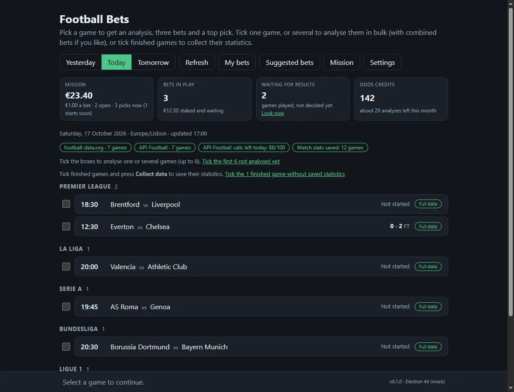

Football Bets
A desktop app that lists today's football games, has a Claude agent analyse the ones you pick and suggest three bets, then keeps score of whether its estimates actually beat the bookmakers'.
- Role
- Personal project, for fun with friends
- Runs
- Windows installer, no admin rights needed
- Cost
- About 0.2 cents per game analysed
- Stack
- Electron
- React
- TypeScript
- Claude Haiku
- football-data.org
- API-Football
- Excel export

How an analysis works
- Gather: standings, recent form and head-to-head from football-data.org; prediction, team stats, injuries and odds from API-Football. Every source is cached and can fail on its own.
- Analyse: one Claude Haiku call returns a fixed JSON shape: summary, key factors, data gaps, three bets (low, medium and high risk) and a top pick. The model refers to odds by reference, so it can't invent a number.
- Assess: you type the odd you'd bet at, and the app works out risk and value from the estimated chance and shows the lowest odd still worth taking.
Keeping it honest
- Learn from results: per risk level, how often bets won against how often the analysis said they would.
- Is the analysis better than the market? Brier scores for the analysis against the bookmakers' own chances with the margin removed.
- Closing line value: compares the odd you took with the last odds before kick-off.
- A Mission mode with a hard bankroll limit, a weekly report and an assistant chat on every screen.
Built for fun among friends. It can't make the analysis know more about football; it only shows when it's too sure of itself.
Under the hood
- App
- Electron, React and TypeScript with electron-vite; API keys stored encrypted with the operating system's keychain
- Limits
- A rate limiter and a quota guard counted from each API's response headers, with a reserve so the games list always loads; cache per data type, from 10 minutes for odds to 24 hours for head-to-head
- Data
- Picks exported to Excel, a daily backup, and the app keeps working in the tray to fetch results
- Tests
- Unit tests for merge logic, odds, risk, cache and quota; a self-test that runs one real analysis; a packaging check that no keys or data end up in the installer